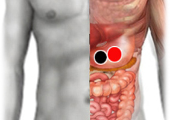

Estómago
Par
estómago - estómago

Generalidades:
Cólicos estomacales, mala digestión y eructos. Gastritis en boca del estomago Hiperacidez. Masajear con el imán (-) del ombligo del estomago (hacia arriba) trombo (obstruye la circulación).
Este par también puede ayudar a reducir los eructos.
Revisar el par especial Benavides, así como pares del sistema nervioso.